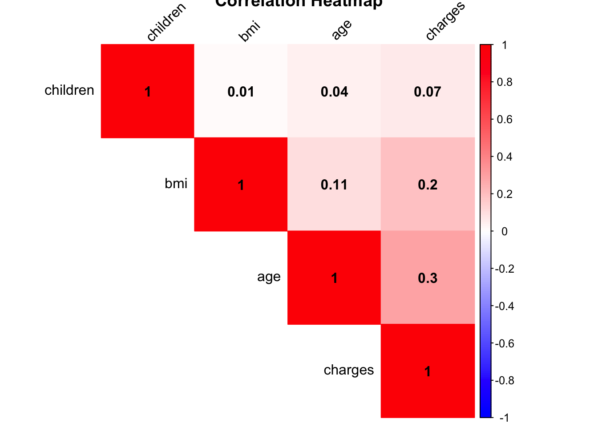
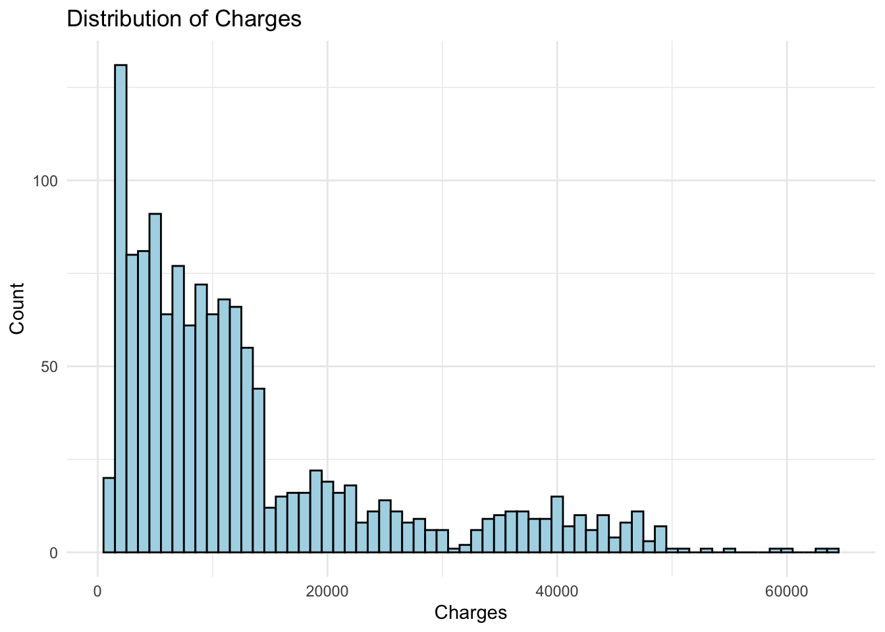
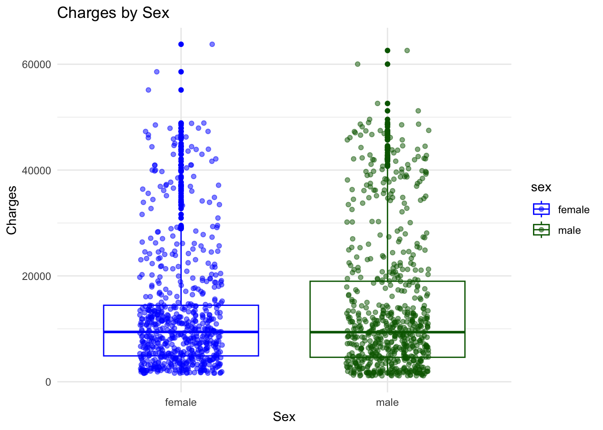
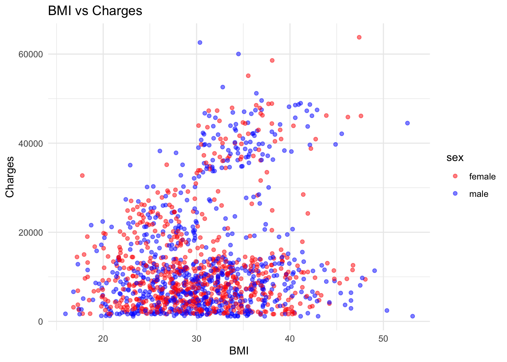
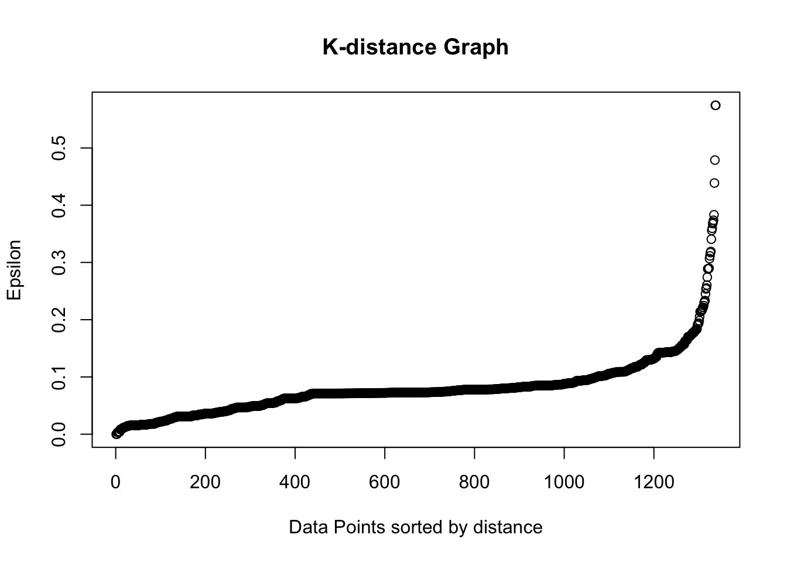
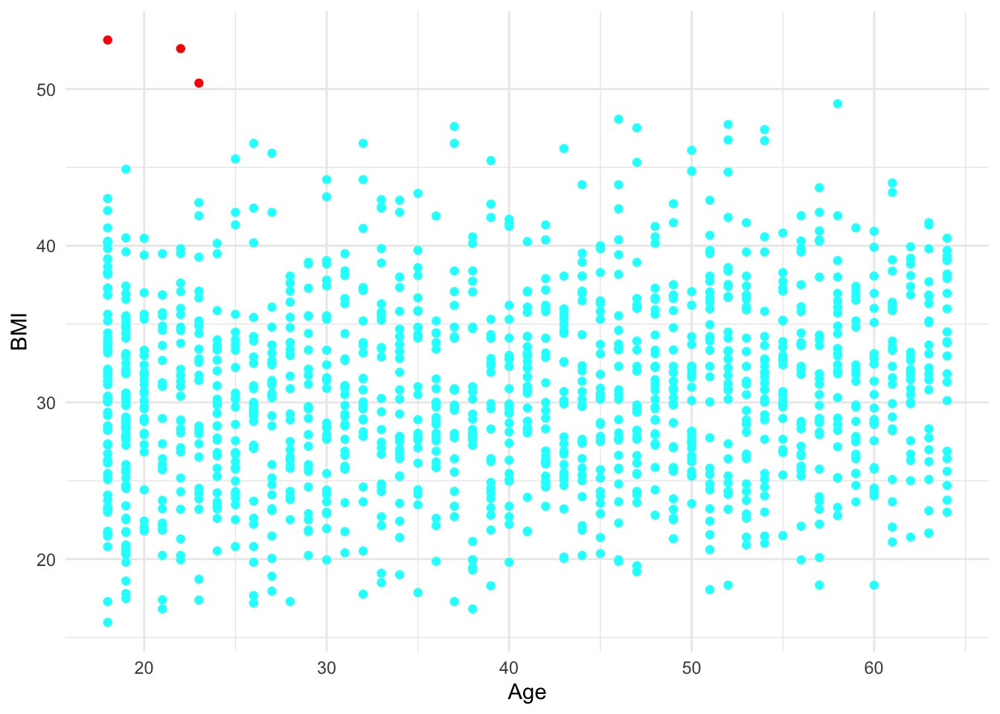

Anomaly detection, also known as outlier detection, is a fascinating aspect of machine learning. It involves identifying data points, events, or observations that deviate significantly from the norm. These anomalies can often provide critical and actionable insights in various domains, such as fraud detection in banking, intrusion detection in network security, and fault detection in critical systems.
What is Anomaly Detection?
Anomaly detection is the process of identifying unexpected items or events in datasets, which differ from the norm. In other words, it’s about finding the ‘outliers’ in your data. For example, in a manufacturing context, an anomalous event could be a sudden increase in defective products.
Types of Anomalies
There are three main types of anomalies:
Point Anomalies: A single instance of data is anomalous if it’s too far off from the rest. For example, spending $100 on food every day during the holiday season is normal, but may be odd otherwise.
Contextual Anomalies: The abnormality is context-specific. This type of anomaly is common in time-series data. For example, spending $100 on food during the holiday season is normal, but may be odd otherwise.
Collective Anomalies: A set of data instances collectively helps in detecting anomalies. For example, someone is trying to copy data form a remote machine to a local host unexpectedly, an anomaly that would be flagged as a potential cyber attack.
Anomaly Detection Techniques
There are several techniques used for anomaly detection, each with its strengths and weaknesses. Some of the most popular methods include:
Statistical Methods: These methods model the normal data behavior using statistical parameters like mean, median, mode, variance, etc. Any data instance that doesn’t fit this model is considered an anomaly.
Machine Learning-Based Methods: These include techniques like clustering, classification, and nearest neighbors. These methods can either be supervised (labels are available) or unsupervised (no labels).
Time Series Analysis: This is particularly useful for sequential data, where some pattern or trend is expected. Techniques used here include state space models, decomposition methods, etc.
Let’s get familiar with the fundamental idea underlying the hyperparameters before working with the data. We must examine a few of the hyperparameters that characterize the DBScan job in order to comprehend the idea of the core points. min_samples is the first hyperparameter (HP). This is the bare minimum of core points required for cluster formation. The second crucial HP is ‘eps’. “eps” is the greatest separation that two samples must have in order to be grouped together. Although border points are somewhat farther from the cluster center, they are nonetheless part of the same cluster as core points. All other data points are referred to as “Noise Points” because they are unrelated to any cluster. They require more research because they may be unusual or not.
About the data:
There are seven columns and 1338 rows in the data, which indicates that there are seven separate variables. The remaining seven variables—age, sex, bmi, children, smoker, region, and charges. You can access the data from here:
Import necessary libraries:
library(fpc)library(ggplot2)library(dbscan)
Attaching package: 'dbscan'
The following object is masked from 'package:fpc':
dbscan
The following object is masked from 'package:stats':
as.dendrogram
library(cluster)
Warning: package 'cluster' was built under R version 4.3.3
library(FNN)library(corrplot)
corrplot 0.92 loaded
Import the data set and visualize the data:
data <-read.csv("/Users/test/Desktop/Kamal/Virginia_Tech_PhD/First semester/Machine_learning/mlblog/kamalchhetrii.github.io/insurance.csv")
head(data)
age sex bmi children smoker region charges
1 19 female 27.900 0 yes southwest 16884.924
2 18 male 33.770 1 no southeast 1725.552
3 28 male 33.000 3 no southeast 4449.462
4 33 male 22.705 0 no northwest 21984.471
5 32 male 28.880 0 no northwest 3866.855
6 31 female 25.740 0 no southeast 3756.622
Lets see if the data contains any null values:
sum(is.na(data))
[1] 0
This data set does not contain null values. Thus, we don’t have to deal with it further.
Explanatory analysis:
# Select the relevant columnsdata_selected <- data[, c('age', 'bmi', 'charges', 'children')]# Calculate the correlation matrixcorrs <-cor(data_selected)# Create a heatmap with correlation valuescorrplot(corrs, method="color", type="upper", order="hclust", addCoef.col ="black", # Change correlation coefficients color to whitetl.col="black", tl.srt=45, # Text label color and rotationcol =colorRampPalette(c("blue", "white", "red"))(200), # Change color schemetitle="Correlation Heatmap") # Add title

From this, we can see there is not much strong correlation between the different variables.
Lets see the distribution of charges variable:
# Create a histogram of chargesggplot(data, aes(x=charges)) +geom_histogram(binwidth=1000, color="black", fill="lightblue") +labs(title="Distribution of Charges", x="Charges", y="Count") +theme_minimal()

From this histogram, we can see the distribution of our charges data which is left skewed and there is the possibility that this data set contains the outlier.
Let’s explore the data set for charges for males and female:
# Create a boxplot of charges by sexggplot(data, aes(x=sex, y=charges, color=sex)) +geom_boxplot() +# Include outliersgeom_jitter(width=0.2, alpha=0.5) +# Add jittered points for better visualizationlabs(title="Charges by Sex", x="Sex", y="Charges") +theme_minimal() +scale_color_manual(values=c("blue", "darkgreen")) # Specify colors for each sex

Now, lets see the charges by bmi for further data exploration:
# Create a scatter plot of BMI vs chargesggplot(data, aes(x=bmi, y=charges, color=sex)) +geom_point(alpha=0.5) +# Add points with transparency for better visualizationlabs(title="BMI vs Charges", x="BMI", y="Charges") +theme_minimal() +scale_color_manual(values=c("red", "blue")) # Specify colors for each sex

Calculate the epsilon value using K-distance graph:
# Load necessary librarieslibrary(FNN)# Select the relevant columnsdata_selected <- data[, c('age', 'bmi')]# Standardize the datadata_std <-scale(data_selected)# Compute the nearest neighborsk <-2# 2 because the point itself is includedknn_dist <-knn.dist(data_std, k=k)# Sort the distancesknn_dist <-sort(knn_dist[,k], decreasing=FALSE) # Exclude the distance to the point itself# Plot the k-distance graphplot(knn_dist, main="K-distance Graph", xlab="Data Points sorted by distance", ylab="Epsilon")

The optimum value of epsilon is at the point of maximum curvature in the K-Distance Graph, which is 0.6 in this case. Domain knowledge affects minPoints’ value. I’m using 10 minPoints at this time around.
Based on the above calculation, we can do the DBSCAN clustering
# Select the relevant columnsdata_selected <- data[, c('age', 'bmi')]# Standardize the datadata_std <-scale(data_selected)# Perform DBSCAN clusteringdbscan_res <-dbscan(data_std, eps=0.6, minPts=10) print(dbscan_res)
DBSCAN clustering for 1338 objects.
Parameters: eps = 0.6, minPts = 10
Using euclidean distances and borderpoints = TRUE
The clustering contains 1 cluster(s) and 3 noise points.
0 1
3 1335
Available fields: cluster, eps, minPts, dist, borderPoints
Visualization:
# Add the DBSCAN results to our datadata$cluster <-as.factor(dbscan_res$cluster)# Define colors for each clustercolors <-rainbow(length(unique(dbscan_res$cluster)))names(colors) <-levels(data$cluster)# Create the plotggplot(data, aes(x=age, y=bmi, color=cluster)) +geom_point() +scale_color_manual(values = colors) +theme_minimal() +labs(x="Age", y="BMI", color="Cluster") +theme(legend.position="none")

From the above scatterplot, we can see that three data points are the noise and one cluster with no outliers.
# Create an outliers data frameoutliers <- data[data$cluster ==-1, ]# Print the outliersprint(outliers)
[1] age sex bmi children smoker region charges cluster
<0 rows> (or 0-length row.names)